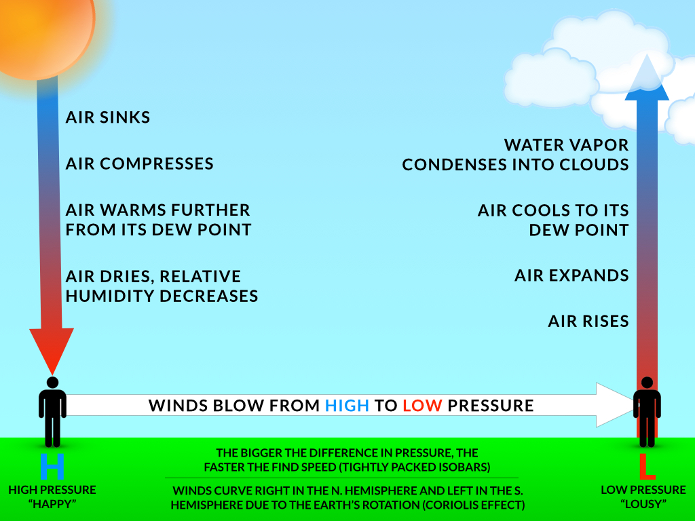

Planet Earth

Hurricanes and tropical storms are formed making use of air thats warmed and moist as they escape the equater in a system of convection, warm air rising up lowering pressure then cool air sweeping in below filling the lowered pressure spot to repeat the same process. This is the same process that goes into fuelling storms that in majority of cases form ontop warm pockets of ocean.

Hurricanes and tropical storms are formed making use of air thats warmed and moist as they escape the equater in a system of convection, warm air rising up lowering pressure then cool air sweeping in below filling the lowered pressure spot to repeat the same process. This is the same process that goes into fuelling storms that in majority of cases form ontop warm pockets of ocean.
This figure displays the effects of the pressurized atmosphere generated by the suns heat either reflecting off the earth's light surfaces or being absorbed through darker land masses, heating the cool air which in turn rises creating a vaccum for more cool to repeat the process. This natural process is tied to the formation of clouds and the weathers variable weather patterns.